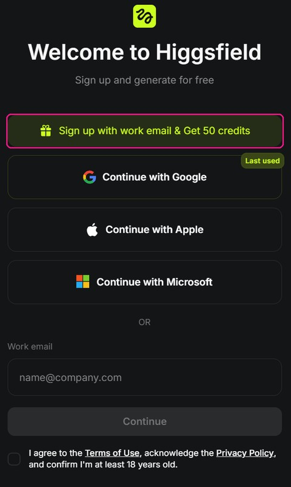
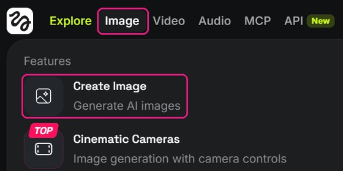
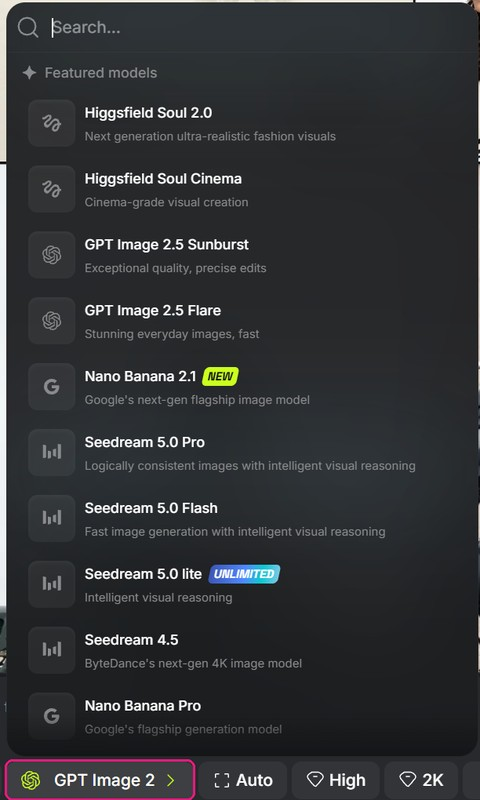
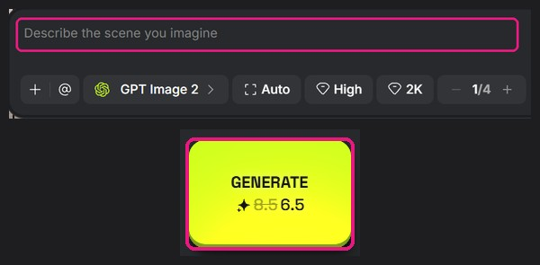
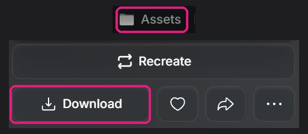
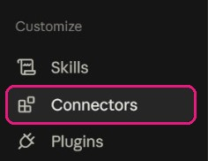
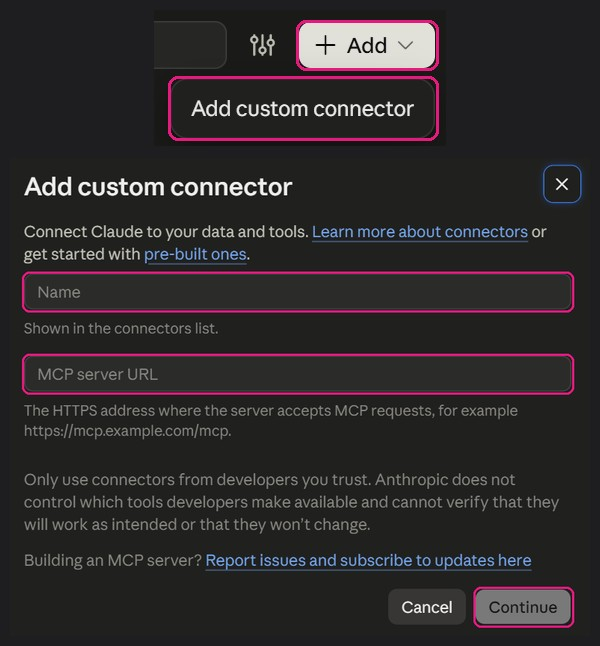
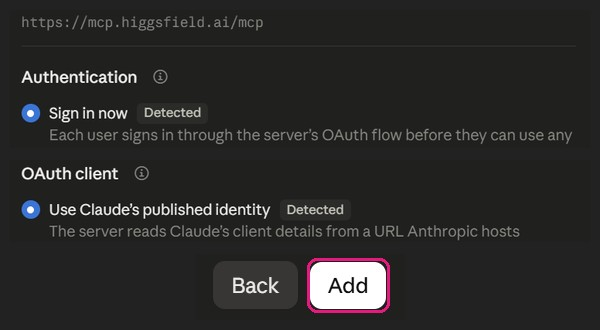
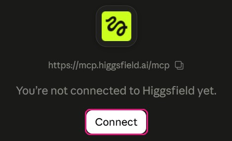
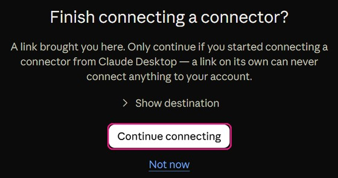

Before generating
לפני שמייצרים
"תבדוק כמה קרדיטים נשארו לי בהיגספילד, ותציע שלוש בקשות לתמונה של [מה שאתם צריכים]. אל תייצר עד שאני בוחר."
מדריך קצר להיגספילד, ולחיבור שלו לקלוד
במקום שתצטרכו לעבור בין כלים, היגספילד מאגדים לכם את הכל. בוחרים מודל לתמונה או לווידאו, כותבים מה רוצים, ומקבלים תוצאה. משלמים בקרדיטים.
באתר של היגספילד אפשר להירשם עם Google, Apple או Microsoft. לפי מסך ההרשמה, מי שנרשם עם מייל של עבודה מקבל 50 קרדיטים.

בתפריט למעלה, Image ואז Create Image. לווידאו זה אותו דבר, דרך Video.

למטה, ליד שורת הכתיבה, מופיע שם המודל. לוחצים עליו ובוחרים. לא יודעים איזה? תתחילו מאחד ותשוו אחר כך.

ליד חלק מהמודלים מופיע UNLIMITED. באתר עצמו הם לא מורידים קרדיטים, תלוי במסלול שלכם.
בשורה Describe the scene you imagine כותבים מה רוצים. באנגלית, ובתיאור ולא בשם: מה רואים, מאיזו זווית, באיזה אור, על איזה רקע.
מתחת יש הגדרות: יחס, איכות, רזולוציה וכמה תמונות. על כפתור GENERATE כתוב כמה קרדיטים זה יעלה, לפני שלוחצים.

כל מה שנוצר נשמר ב-Assets, למעלה מימין. לוחצים על תמונה, ו-Download.

אפשר לבקש מקלוד לייצר בשבילכם, בלי לפתוח את היגספילד. קלוד כותב את הבקשה, שולח, והתמונה נשמרת ב-Assets שלכם.
בהגדרות של קלוד, תחת Customize, תלחצו על Connectors.

למעלה, + Add ואז Add custom connector. ב-Name כותבים Higgsfield, וב-MCP server URL מדביקים את הכתובת:
https://mcp.higgsfield.ai/mcpואז Continue.

קלוד מזהה לבד את ההגדרות, ומסמן אותן Detected. משאירים כמו שזה ולוחצים Add.

בעמוד של הקונקטור, Connect.

נפתח דף של קלוד שמוודא שאתם אלה שהתחילו את החיבור. אם כן, Continue connecting, ומשם נכנסים לחשבון היגספילד ומאשרים. בלי מפתח API.

"תבדוק כמה קרדיטים נשארו לי בהיגספילד, ותציע שלוש בקשות לתמונה של [מה שאתם צריכים]. אל תייצר עד שאני בוחר."
"תייצר את הבקשה שבחרתי בשני מודלים שונים, ותגיד לי כמה קרדיטים היו לפני וכמה אחרי."
היגספילד מציעים גם סקילים לסוכני קוד. ההתקנה, כמו שהיא מופיעה בריפו הרשמי שלהם, מתקינה ומחברת גם את ה-CLI שלהם:
npx skills add higgsfield-ai/skillsב-Claude Code יש גם דרך בלי npx, מתוך Claude Code עצמו:
/plugin marketplace add higgsfield-ai/skills
/plugin install higgsfield@higgsfieldnpx מוריד קוד מהאינטרנט ומריץ אותו. תעתיקו פקודות רק מהמקור הרשמי, לא מסרטון ולא מפוסט.
כל יצירה דרך קלוד עולה קרדיטים, גם במסלולים שבאתר עצמו הם בלי הגבלה. לכן אני לא נותן לקלוד אישור קבוע לייצר. הוא שואל, אני מאשר.
אם דף Finish connecting a connector? נפתח מלינק שמישהו שלח לכם, ולא אתם התחלתם את החיבור, לוחצים Not now. קלוד עצמו כותב שם שלינק לבד אף פעם לא מחבר כלום לחשבון.
היגספילד כותבים שאתם אחראים לכל מה שסוכן מייצר דרך החשבון שלכם. כמו בכל חיבור: לדעת מה ה-AI עושה לפני שזה קורה.